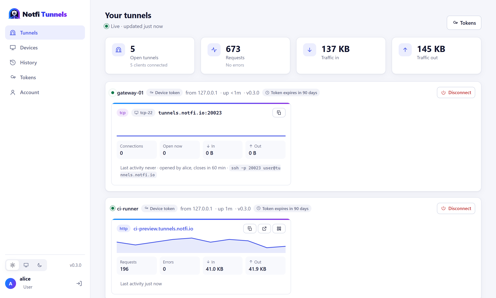
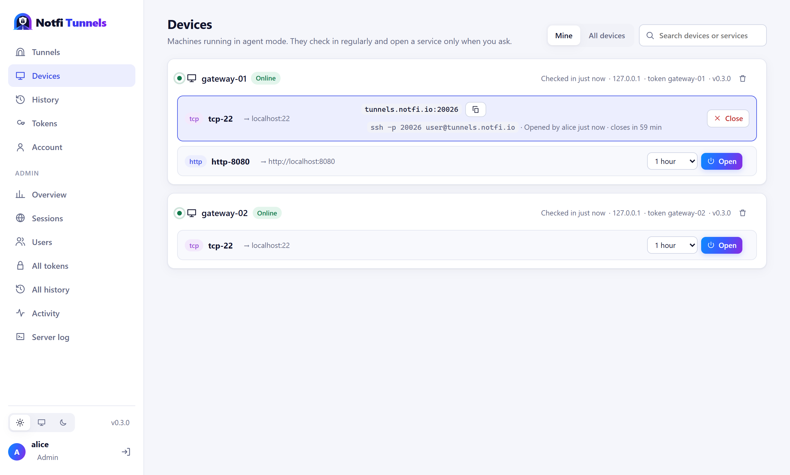
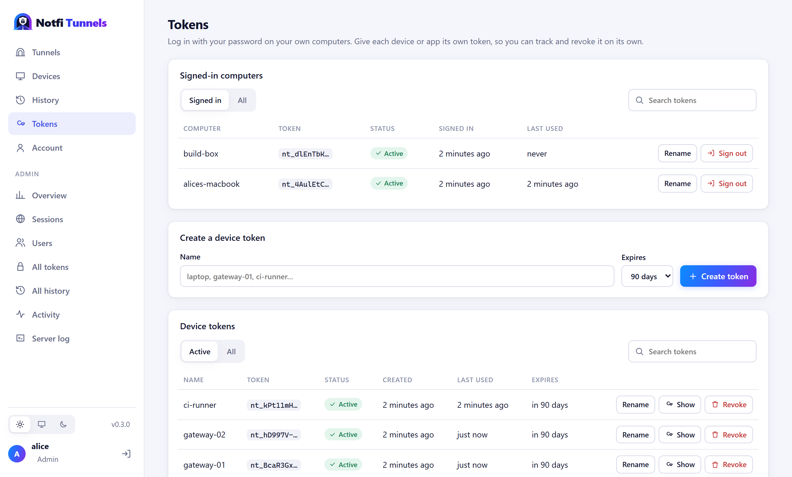

HTTP and TCP tunnels
Web apps get an HTTPS subdomain with WebSockets, streaming and large uploads. SSH, databases and anything else get a TCP port.
Tunnels you run yourself
Notfi Tunnels gives a web app on your laptop, an SSH port on a field device, or a service inside your app a public address, through a server you control.
$ notfi-tunnel login Token for tunnels.notfi.io:4443 (from the Account page): •••••••• Logged in to tunnels.notfi.io:4443 as 'alice'. $ notfi-tunnel http 3000 Forwarding: https://k3j9x0ab.tunnels.notfi.io → localhost:3000 12:04:31 GET /api/orders 200 18 ms 12:04:33 POST /api/orders 201 42 ms
01 · Features
Web apps get an HTTPS subdomain with WebSockets, streaming and large uploads. SSH, databases and anything else get a TCP port.
Agents on devices hold one quiet connection and open SSH or a web UI only when someone asks, for as long as they ask. Nothing is exposed in between.
Live tunnels with traffic graphs, history, devices, your token and fixed subdomains, users and an activity log of every sign-in and change.
See every request and response on your machine, replay it, or copy it as curl. Only you can open it.
Client libraries open tunnels inside your app, starting with .NET, and --json makes the CLI easy to drive from any language.
TLS everywhere, one token per account that you can replace instantly, data encrypted at rest, and limits that keep one client from hogging the server.
02 · Dashboard
Everything the clients do shows up live in the web dashboard. Watch traffic as it happens, open a device's SSH for an hour, or sign a lost laptop out, all from the browser.



03 · How it works
https://name.tunnels.notfi.io for web apps, tunnels.notfi.io:20022 for TCP.04 · Get started
One file for Windows, macOS or Linux. Nothing else to install. Pick your download.
Paste the token from your Account page in the dashboard. The same token works on every machine and device you use.
notfi-tunnel login
notfi-tunnel http 3000 notfi-tunnel tcp 22
Addresses are random. To use a name of your own, assign it to your account in the dashboard, then --subdomain myapp.
05 · Download
Each download is a single executable with everything it needs built in. Extract it and run it. All releases and checksums
Windows 10, Windows 11 and Windows Server.
Expand-Archive notfi-tunnel-win-x64.zip .\notfi-tunnel-win-x64\notfi-tunnel.exe login
Apple silicon Macs. Downloaded in a browser? Clear the quarantine flag first.
tar -xzf notfi-tunnel-osx-arm64.tar.gz cd notfi-tunnel-osx-arm64 xattr -d com.apple.quarantine notfi-tunnel ./notfi-tunnel login
Ubuntu, Debian, Fedora, RHEL, Raspberry Pi OS and other glibc distributions.
tar -xzf notfi-tunnel-linux-x64.tar.gz sudo install notfi-tunnel-linux-x64/notfi-tunnel /usr/local/bin/ notfi-tunnel login
The Linux downloads also include a systemd unit and installer for running the client as a device agent.
06 · Devices
Run the client as an agent on a device. It holds one outbound connection and sends a 4-byte keepalive every minute, nothing more. Open a service from the dashboard, pick how long, and the device opens that tunnel right away. It closes again on its own.
notfi-tunnel agent \ --service tcp:22 \ --service http:8080 \ --name gateway-01 Device 'gateway-01' registered as 'alice', offering tcp-22 (tcp localhost:22), http-8080 (http localhost:8080). Keepalive every 60s. Opening 'tcp-22' for alice, closes at 14:30
07 · Languages
Client libraries run the same engine as the CLI inside your process. There's no process to spawn and no output to parse: you get the URL back and an event for every request.
await using var tunnel = await NotfiTunnel.StartHttpAsync(5000,
new NotfiTunnelOptions { Token = token });
Console.WriteLine(tunnel.PublicUrl);
tunnel.RequestCompleted += (_, r) =>
Console.WriteLine($"{r.Method} {r.Path} → {r.Status}");
A native Node.js package is on the way. Until then, drive the CLI from Node.js: notfi-tunnel http 3000 --json prints the public URL and every request as one JSON object per line.
A native Python package is on the way. Until then, drive the CLI from Python: notfi-tunnel http 3000 --json prints the public URL and every request as one JSON object per line.
A native Go package is on the way. Until then, drive the CLI from Go: notfi-tunnel http 3000 --json prints the public URL and every request as one JSON object per line.
A native Java package is on the way. Until then, drive the CLI from Java: notfi-tunnel http 3000 --json prints the public URL and every request as one JSON object per line.
08 · Self-host
The server is a single executable with the dashboard built in. A small cloud server is plenty to start. Point clients at it with --server tunnels.example.com, or Server = "https://tunnels.example.com" in code.
Installs as a background service that starts on boot and runs unprivileged in a sandbox. An installer sets it up.
Run it as a container next to your other services, with its data on a volume.
Runs as a Windows service, or from a terminal while you try it out.
Runs from a terminal, handy for a home lab or a Mac mini in the office.
Tunnels live under your own domain, such as *.tunnels.example.com, with a wildcard certificate that renews automatically.
People sign in to the dashboard with a password and get one token for all their machines and devices, replaceable in a click; admins manage users, sessions and devices.
Data is encrypted at rest with a key you keep, and history and activity are cleaned up after a retention period you choose.